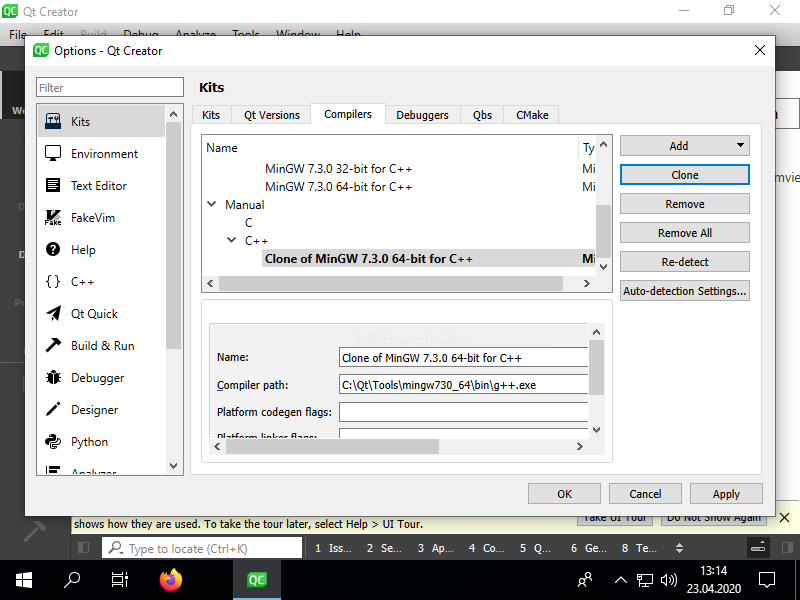
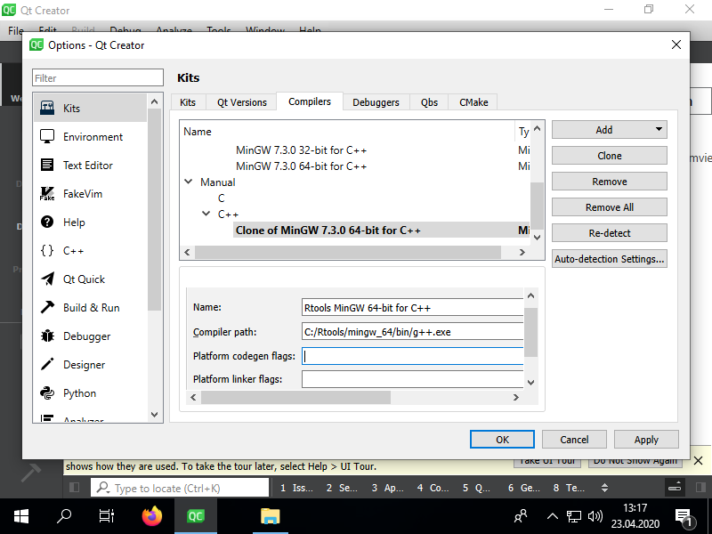
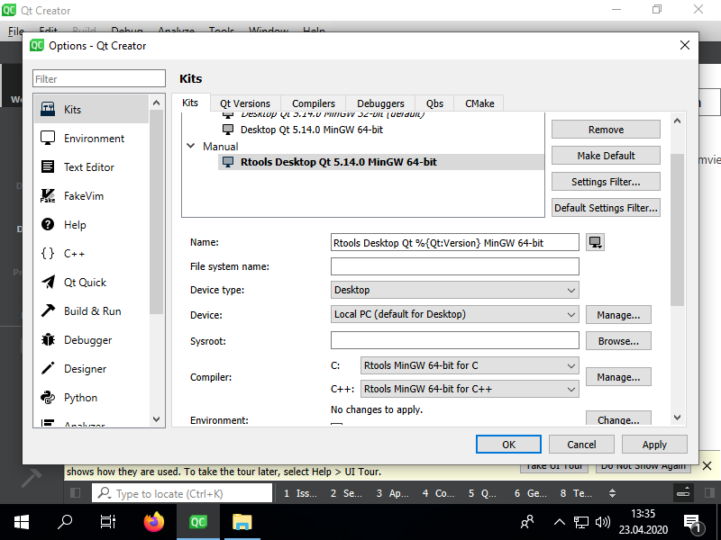
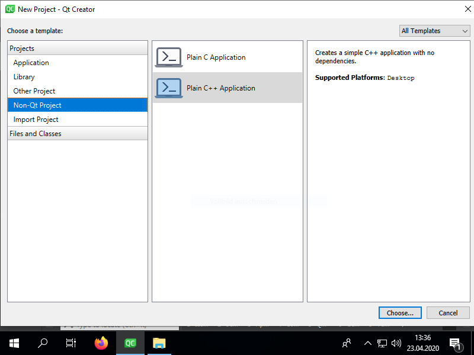
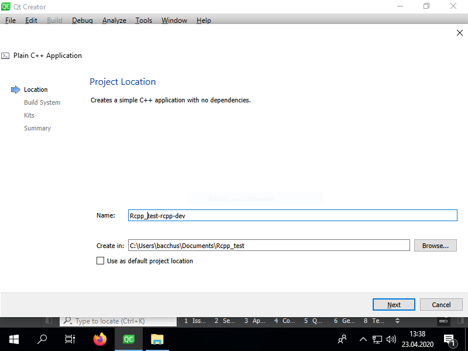
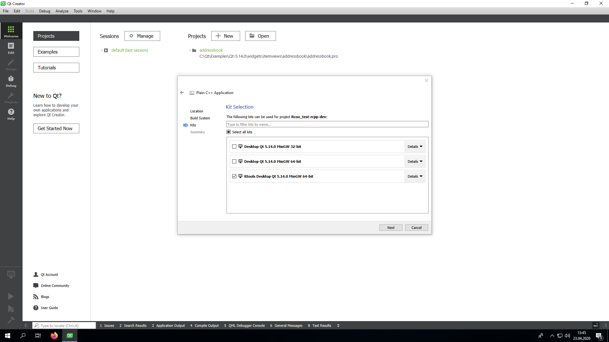

[[Rcpp]] and [[Qt Creator]]¶
Motivation¶
- RStudio is a great IDE for R, but its C++ support is limited
- Debugging C++ code is difficult with RStudio
- Qt Ceator is a great IDE for C++ and works very well for debugging
Prerequisites¶
- Install and setup R, RStudio, Rcpp
- Set PATH environment variable for R and Rtools in
- [[Install Qt Creator]]
- Create an Setup an R-Package with Rcpp in RStudio
Add the Rtools compiler to Qt Creator (Windows only)¶
- be careful not to mix up the 32-bit versions with the 64-bit versions
- in Tools > Options > Kits in the Compilers tab select a MinGW C++ compiler and Clone it:

- change the name of the cloned compiler to, e.g. Rtools MinGW C++ and change the Compiler path the g++.exe of your Rtools installation:

- Just as with the C++ compiler, also clone the MinGW C compiler, rename the cloned compiler and change the Compiler path to the gcc.exe of your Rtools installation
- Select the Kits tab and clone a default Kit. Clone a 64-bit kit if you want to use a 64-bit compiler or a 32-bit kit to use with a 32-bit compiler. Rename it and select the newly added C and C++ compilers from your Rtools installation:

- Be aware, you cannot use the Qt libraries with the Rtools compiler
Create a C++ Project in Qt Creator¶
- New Project > Non-Qt Project > Plain C++ Application

- Give the project a meaningful name. I usually use packagename-rcpp-dev and create it in the R-Project's folder structure:

- Windows: choose a Kit with the Rtools compiler & next, next, finish :-)

Add the Rcpp and RInstide libraries¶
- in your *.pro file, add:
## Template from the example at http://dirk.eddelbuettel.com/blog/2011/03/25/#rinside_and_qt
## comment this out if you need a different version of R,
## and set set R_HOME accordingly as an environment variable
R_HOME = $$system(R RHOME)
## include headers and libraries for R
RCPPFLAGS = $$system($$R_HOME/bin/R CMD config --cppflags)
RLDFLAGS = $$system($$R_HOME/bin/R CMD config --ldflags)
RBLAS = $$system($$R_HOME/bin/R CMD config BLAS_LIBS)
RLAPACK = $$system($$R_HOME/bin/R CMD config LAPACK_LIBS)
## if you need to set an rpath to R itself, also uncomment
RRPATH = -Wl,-rpath,$$R_HOME/lib
## include headers and libraries for Rcpp interface classes
## note that RCPPLIBS will be empty with Rcpp (>= 0.11.0) and can be omitted
RCPPINCL = $$system($$R_HOME/bin/Rscript -e \"Rcpp:::CxxFlags\(\)\")
RCPPLIBS = $$system($$R_HOME/bin/Rscript -e \"Rcpp:::LdFlags\(\)\")
## include headers and libraries for RInside embedding classes
RINSIDEINCL = $$system($$R_HOME/bin/Rscript -e \"RInside:::CxxFlags\(\)\")
RINSIDELIBS = $$system($$R_HOME/bin/Rscript -e \"RInside:::LdFlags\(\)\")
## compiler etc settings used in default make rules
QMAKE_CXXFLAGS += $$RCPPWARNING $$RCPPFLAGS $$RCPPINCL $$RINSIDEINCL
QMAKE_LIBS += $$RLDFLAGS $$RBLAS $$RLAPACK $$RINSIDELIBS $$RCPPLIBS
Use R, Rcpp and C++ seamlessly¶
- Add your Rcpp files just like any other file to your project in Qt Creator, i.e. right-click on the project name in the project structure > Add existing files and add all C++ files you need:

- you can embed an R session like this:
#include <iostream>
#include <RInside.h>
using namespace std;
using namespace Rcpp;
int main()
{
RInside R; // this is an R session, yay!
R.parseEvalQ("i <- 5 + 5");
int x = R["i"];
cout << "Hello " << x << endl;
IntegerVector vec = R.parseEval("seq(0, 100, 7)");
cout << "\nHello vector:"<< endl;
for (unsigned i = 0; i < vec.size(); i++) {
cout << vec[i] << " ";
}
cout << endl;
return 0;
}
- Debugging works as usual, with the exception, that you can't see the values that are stored in Rcpp objects. That's because Rcpp objects are just wrappers to C-pointers (called SEXP) that point to memory locations of R-objects. But fortunately, it is often trivial to convert Rcpp objects to C++ objects:

Further reading on Rcpp¶
References: Related: